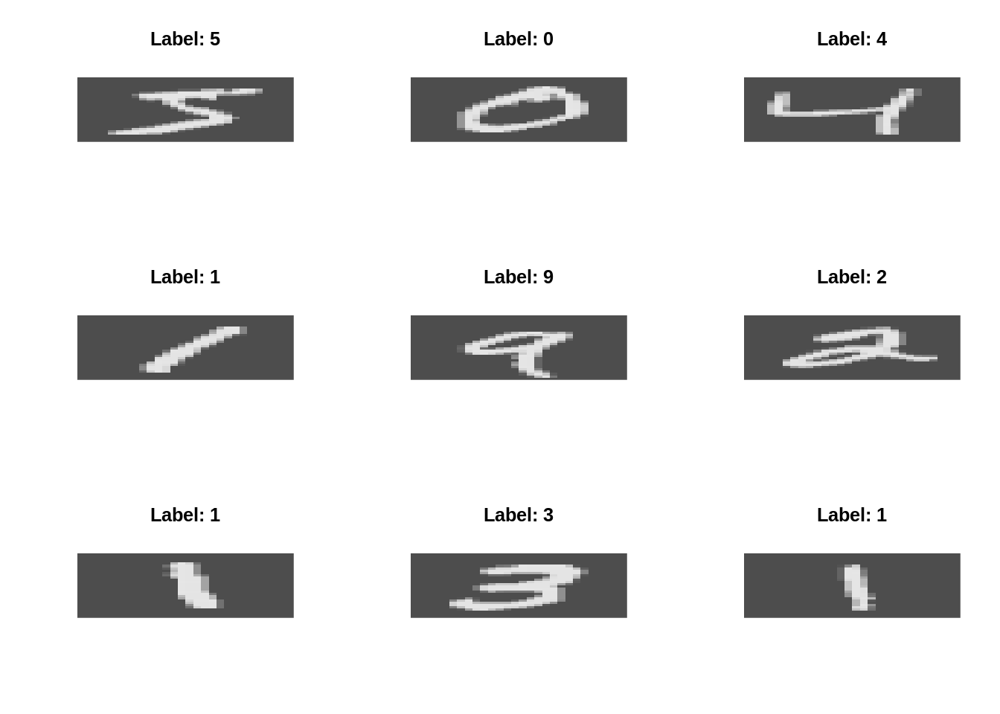
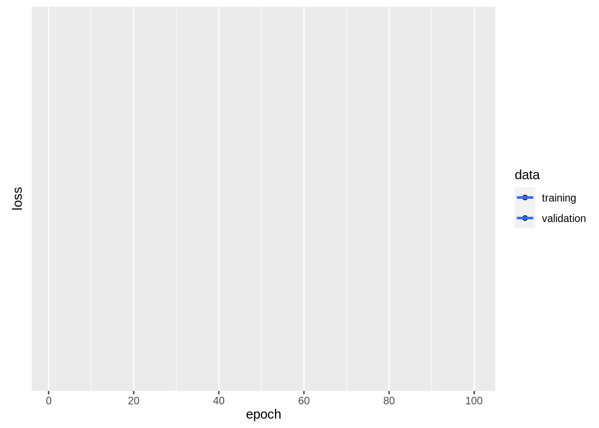

4 Deep learning
4.1 Deep Neural Networks
4.1.1 Dropout and Early stopping
- Early stopping: you might have noticed yesterday that even with regularization the validation loss will start to increase at some point during the training. Early stopping allows us to stop the training when for instance the test loss does not increase anymore
- With l1/l2 regularization we have to carefully tune the regularization strength. Dropout is robuster, and tuning of the dropout rate can be beneficial but a rate between 0.2-0.5 works often quite well
4.2 Convolutional Neural Networks - MNIST
The MNIST dataset is maybe one of the most famous image datasets. It is a dataset of 60,000 handwritten digits from 0-9.
Let’s define a few helper functions:
library(keras)
rotate = function(x) t(apply(x, 2, rev))
imgPlot = function(img, title = ""){
col=grey.colors(255)
image(rotate(img), col = col, xlab = "", ylab = "", axes=FALSE, main = paste0("Label: ", as.character(title)))
}The dataset is so famous that there is an automatic download function in keras:
data = dataset_mnist()
train = data$train
test = data$testLet’s visualize a few digits:
par(mfrow = c(3,3))
.n = sapply(1:9, function(x) imgPlot(train$x[x,,], train$y[x]))
Similar to the normal ML workflow, we have to scale the pixels (from 0-255) to the range of [0,1] and one hot encode the response:
train_x = array(train$x/255, c(dim(train$x), 1))
test_x = array(test$x/255, c(dim(test$x), 1))
train_y = to_categorical(train$y, 10)
test_y = to_categorical(test$y, 10)We also use here now arrays instead of matrices. Arrays are higher dimensional matrices (tensor of rank 3). Finally, we have a “real” tensor.
The last dimension stands for the number of channels in the image. In our case we have only one channel because the images are white-black.
Normally we would have three channels - colors are encoded by the combination of three channels (e.g. rgb).
model = keras_model_sequential()
model %>%
layer_conv_2d(input_shape = c(28L, 28L,1L),filters = 16L, kernel_size = c(2L,2L), activation = "relu") %>%
layer_max_pooling_2d() %>%
layer_conv_2d(filters = 16L, kernel_size = c(3L,3L), activation = "relu") %>%
layer_max_pooling_2d() %>%
layer_flatten() %>%
layer_dense(100L, activation = "relu") %>%
layer_dense(10L, activation = "softmax")
summary(model)## Model: "sequential_46"
## _______________________________________________________________________________________________________________________________________________________
## Layer (type) Output Shape Param #
## =======================================================================================================================================================
## conv2d_19 (Conv2D) (None, 27, 27, 16) 80
## _______________________________________________________________________________________________________________________________________________________
## max_pooling2d_16 (MaxPooling2D) (None, 13, 13, 16) 0
## _______________________________________________________________________________________________________________________________________________________
## conv2d_20 (Conv2D) (None, 11, 11, 16) 2320
## _______________________________________________________________________________________________________________________________________________________
## max_pooling2d_17 (MaxPooling2D) (None, 5, 5, 16) 0
## _______________________________________________________________________________________________________________________________________________________
## flatten_10 (Flatten) (None, 400) 0
## _______________________________________________________________________________________________________________________________________________________
## dense_121 (Dense) (None, 100) 40100
## _______________________________________________________________________________________________________________________________________________________
## dense_122 (Dense) (None, 10) 1010
## =======================================================================================================================================================
## Total params: 43,510
## Trainable params: 43,510
## Non-trainable params: 0
## _______________________________________________________________________________________________________________________________________________________We will start now with a 2D convolutional layer, (3D would be e.g. for movies, so the third dimension would correspond to time and not to the color channels!).
We use 16 convolutional kernels (filters) with a size of 2x2.
The pooling layer downsizes the resulting feature maps.
After another conv and pooling layer we flatten the output, i.e. the following dense layer treats the previous layer as normal dense layer (so the dense layer is connected to all weights from the last feature maps).
We end the model with our typical output layer.
The rest is as usual:
model %>%
compile(
optimizer = keras::optimizer_adamax(0.01),
loss = loss_categorical_crossentropy
)
summary(model)## Model: "sequential_46"
## _______________________________________________________________________________________________________________________________________________________
## Layer (type) Output Shape Param #
## =======================================================================================================================================================
## conv2d_19 (Conv2D) (None, 27, 27, 16) 80
## _______________________________________________________________________________________________________________________________________________________
## max_pooling2d_16 (MaxPooling2D) (None, 13, 13, 16) 0
## _______________________________________________________________________________________________________________________________________________________
## conv2d_20 (Conv2D) (None, 11, 11, 16) 2320
## _______________________________________________________________________________________________________________________________________________________
## max_pooling2d_17 (MaxPooling2D) (None, 5, 5, 16) 0
## _______________________________________________________________________________________________________________________________________________________
## flatten_10 (Flatten) (None, 400) 0
## _______________________________________________________________________________________________________________________________________________________
## dense_121 (Dense) (None, 100) 40100
## _______________________________________________________________________________________________________________________________________________________
## dense_122 (Dense) (None, 10) 1010
## =======================================================================================================================================================
## Total params: 43,510
## Trainable params: 43,510
## Non-trainable params: 0
## _______________________________________________________________________________________________________________________________________________________epochs = 5L
batch_size = 32L
model %>%
fit(
x = train_x,
y = train_y,
epochs = epochs,
batch_size = batch_size,
shuffle = TRUE,
validation_split = 0.2
)4.2.1 Data Augmentation
Having to train a CNN using very little data is a common problem. Data augmentation helps to artificially increase the number of images.
The idea is that the CNN has to learn specific structures such as edges from images. Rotating, adding noise, and zooming in and out will preserve the overall key structure we are interested in, but the model will see new images and has to search once again for the key structures.
Luckily, it is very easy to use data augmentation in keras.
We will use again the MNIST dataset:
library(keras)
data = dataset_mnist()
train = data$train
test = data$test
train_x = array(train$x/255, c(dim(train$x), 1))
test_x = array(test$x/255, c(dim(test$x), 1))
train_y = to_categorical(train$y, 10)
test_y = to_categorical(test$y, 10)
print(dim(train_x))## [1] 60000 28 28 1print(dim(test_y))## [1] 10000 10model = keras_model_sequential()
model %>%
layer_conv_2d(input_shape = c(NULL, 28, 28,1),filters = 16, kernel_size = c(2,2), activation = "relu", use_bias = F) %>%
layer_max_pooling_2d() %>%
layer_conv_2d(filters = 16, kernel_size = c(3,3), activation = "relu", use_bias = F) %>%
layer_max_pooling_2d() %>%
layer_flatten() %>%
layer_dense(100, activation = "relu") %>%
layer_dense(10, activation = "softmax")
summary(model)## Model: "sequential_47"
## _______________________________________________________________________________________________________________________________________________________
## Layer (type) Output Shape Param #
## =======================================================================================================================================================
## conv2d_21 (Conv2D) (None, 27, 27, 16) 64
## _______________________________________________________________________________________________________________________________________________________
## max_pooling2d_18 (MaxPooling2D) (None, 13, 13, 16) 0
## _______________________________________________________________________________________________________________________________________________________
## conv2d_22 (Conv2D) (None, 11, 11, 16) 2304
## _______________________________________________________________________________________________________________________________________________________
## max_pooling2d_19 (MaxPooling2D) (None, 5, 5, 16) 0
## _______________________________________________________________________________________________________________________________________________________
## flatten_11 (Flatten) (None, 400) 0
## _______________________________________________________________________________________________________________________________________________________
## dense_123 (Dense) (None, 100) 40100
## _______________________________________________________________________________________________________________________________________________________
## dense_124 (Dense) (None, 10) 1010
## =======================================================================================================================================================
## Total params: 43,478
## Trainable params: 43,478
## Non-trainable params: 0
## _______________________________________________________________________________________________________________________________________________________model %>%
compile(
optimizer = optimizer_adamax(),
loss = loss_categorical_crossentropy
)We have now to define a generator object (it is a specific object which infinitly draws samples from our dataset). In the generator we can turn on the data augementation:
aug = image_data_generator()
generator = flow_images_from_data(train_x, train_y,generator = aug)
model %>%
fit_generator(generator, steps_per_epoch = dim(train_x)[1],epochs = 5L)## Warning in fit_generator(., generator, steps_per_epoch = dim(train_x)[1], : `fit_generator` is deprecated. Use `fit` instead, it now accept generators.However, now we have to set the step size because the model does not know the first dimension of the image.
4.2.2 Transfer learning
Another approach to reduce the necessary number of images or to speed up convergence of the models is the use of transfer learning.
The idea is that all the convolutional layers have mainly one task - learning to identify highly correlated neighbored features and therefore to learn structures such as edges in the image.
Also, the second idea is that only the top layer, the dense layer is the actual classifier of the CNN. The top classifier will be confronted by sets of different edges/structures and has to decide the label.
Again, this sounds very complicating but is again quite easy with keras:
CIFAR10 preparation:
data = keras::dataset_cifar10()
train = data$train
test = data$test
image = train$x[5,,,]
image %>%
image_to_array() %>%
`/`(., 255) %>%
as.raster() %>%
plot()
train_x = array(train$x/255, c(dim(train$x)))
test_x = array(test$x/255, c(dim(test$x)))
train_y = to_categorical(train$y, 10)
test_y = to_categorical(test$y, 10)Keras provides download functions for all famous architectures/CNN models which are already trained on the imagenet dataset (anoother famous dataset) and the CNNs come already without their top layer
densenet = application_densenet201(include_top = FALSE, input_shape = c(32L, 32L, 3L))We have to specify directly here in the model our input dimension.
Now, we will use not a sequential model but just a “keras_model” where we can specify the inputs and outputs:
model = keras::keras_model(inputs = densenet$input, outputs =
layer_flatten(layer_dense(densenet$output, units = 10L, activation = "softmax"))
)The outputs are our own top layer.
In the next step we want to freeze all layers except for our own last layer (with freezing I mean that we do not want to train the complete model, we only want to train the last layer):
model %>% freeze_weights(to = length(model$layers)-1)Btw, you can always check the number of trainable weights via summary(model)
And then the usual training:
model %>%
compile(loss = loss_categorical_crossentropy, optimizer = optimizer_adamax())
model %>%
fit(
x = train_x,
y = train_y,
epochs = 1L,
batch_size = 32L,
shuffle = T,
validation_split = 0.2,
)4.3 Flower dataset
create a CNN submit predictions see kaggle flower dataset for specific architectures! Data preparation:
data_files = list.files("flower/", full.names = TRUE)
train = data_files[str_detect(data_files, "train")]
test = readRDS(file = "flower/test.RDS")
train = lapply(train, readRDS)
train_classes = lapply(train, function(d) dim(d)[1])
train = abind::abind(train, along = 1L)
labels_train = rep(0:4, unlist(train_classes))